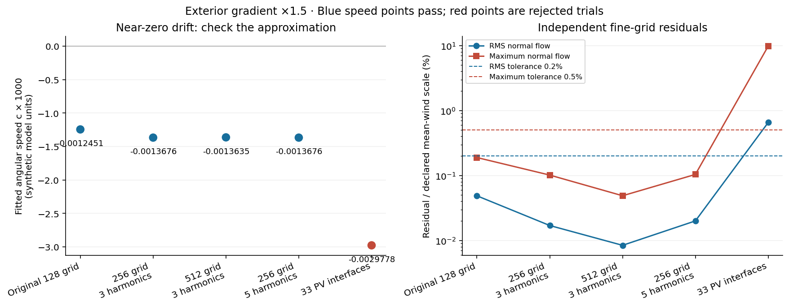
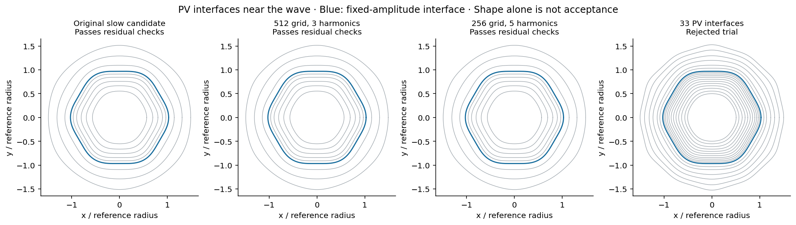
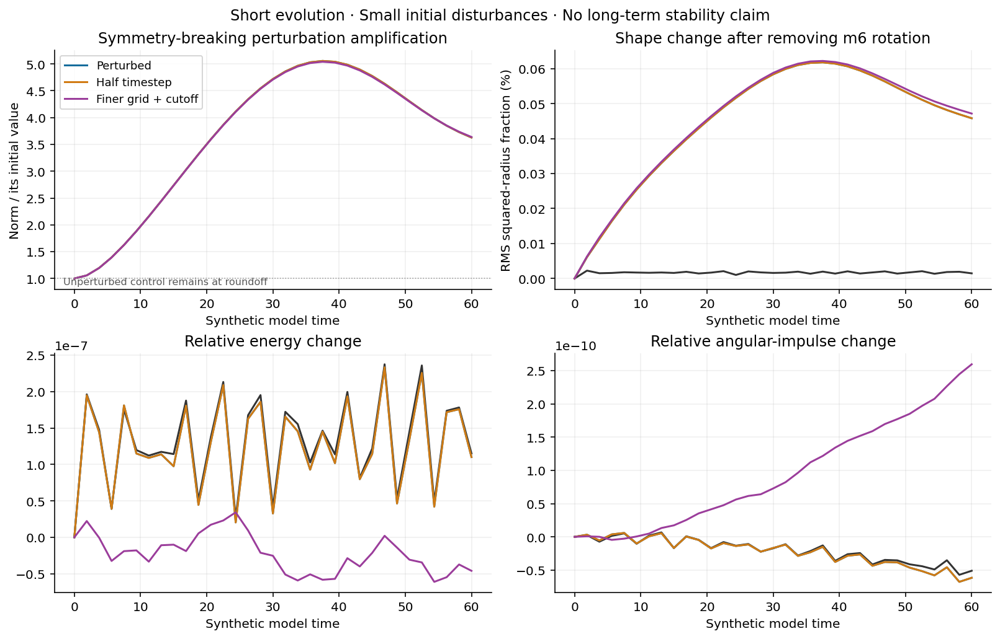
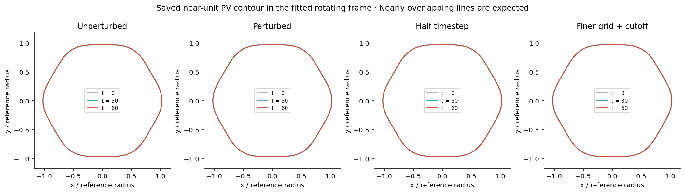
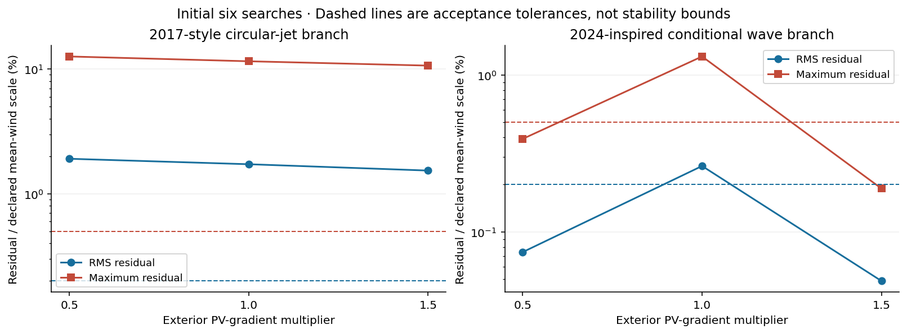

Manual publication · Exterior potential vorticity · Unity 66296701 / 66296702
A slow rotating-wave candidate survives a short test—but the PV approximation remains unresolved
This collection tests whether the PV outside a wave can change its drift and support a matched rotating structure. It includes the initial six searches, refinement of the slow 2024-inspired candidate, and four short evolutions.
What the tests establish
The reoptimized speed changes by 0.29% between the 256 and 512 radial grids at fixed PV interfaces and shape basis. 4 of 4 evolutions reached the requested t = 60. The interval is about 0.35 local gas turnovers.
The symmetry-breaking disturbance grows to 5.1 times its initial norm at t = 37.5, then declines to 3.6 times its initial norm at the endpoint. This nonmonotonic amplification is not evidence of exponential instability, and it is not evidence of stability.
The 33-interface refinement is a rejected trial. PV-interface convergence has not been established. Passing the 16-interface numerical checks does not establish a solution of the smooth-PV model, long-term stability, spontaneous hexagon formation, or Saturn’s observed phase speed.
The model being tested
A new circular-domain contour calculation solves inviscid 1.5-layer QG on the gamma plane. The deep layer is flat and fixed; there is no convection, forcing or physical damping. Total PV is represented by nested constant-PV regions. The sixfold shape is imposed during the equilibrium search, then symmetry-breaking disturbances are allowed during evolution.
The 2024-inspired branch is a conditional planar construction with an explicitly supplied exterior PV profile, not a reconstruction of the complete 2024 solution or the 2017 shallow-water experiment. Its dimensionless parameters are LD = 0.3, gamma = 2 and outer radius = 2.6. The exterior gradient is multiplied by 1.5 in the selected case. Global inversion changes the upper winds when exterior PV changes.
All phase speeds and times below use synthetic model units. These are not Saturn System III drift rates. The circular wall, fixed disturbance amplitude, limited initial conditions and finite PV interfaces remain modeling choices.
Refining the slow candidate
The speed is reoptimized at each resolution. The 512-grid comparison keeps 16 PV interfaces and three shape harmonics. The five-harmonic comparison changes only the shape basis at the 256 grid. The 33-interface comparison changes the PV staircase approximation to the same smooth profile.
| Refinement | Fitted c | RMS normal flow | Maximum normal flow | Equilibrium check |
|---|---|---|---|---|
| 256 grid, 3 harmonics | -0.00136758 | 0.0170% | 0.1015% | Pass |
| 512 grid, 3 harmonics | -0.00136355 | 0.0084% | 0.0488% | Pass |
| 256 grid, 5 harmonics | -0.00136765 | 0.0200% | 0.1038% | Pass |
| 33 PV interfaces | -0.00297777 | 0.6540% | 9.7963% | Rejected |
Acceptance requires normal flow below 0.2% RMS and 0.5% maximum of a declared mean-wind scale, a small grid change, fixed areas and valid nested geometry. A solver returning successfully is not by itself acceptance. Rejected-trial speeds are not established wave speeds.


Short evolution with symmetry-breaking perturbations
All retained azimuthal modes and phases are allowed. The small seeded disturbances include m = 1, 2, 3, 4, 5, 7 and 8. A control isolates deformation caused by the approximate equilibrium itself. The half-step case halves the actual CFL-limited timestep; the finer case doubles the Eulerian mesh and raises the angular cutoff from 48 to 72.
| Case | Outcome | Time reached | Measured c | Final aligned shape change |
|---|---|---|---|---|
| Unperturbed | evolution completed | 60 | -0.00136755 | 0.0015% |
| Perturbed | evolution completed | 60 | -0.00136754 | 0.0458% |
| Half timestep | evolution completed | 60 | -0.00136754 | 0.0458% |
| Finer grid + cutoff | evolution completed | 60 | -0.00136311 | 0.0471% |
The graph method stops if nested polar contours cannot be certified. Spectral projection is an explicit numerical truncation. A completed short interval cannot rule out weak, delayed or finite-amplitude instabilities. The symmetry-breaking norm is a squared-radius measure over interfaces; its change need not be exponential instability.
The angular projection discards a maximum instantaneous 60–81% of the full squared-radius tendency norm across these runs. The absolute discarded norm is small (reported in the summary), but this substantial fraction makes angular-truncation sensitivity an unresolved issue.


The initial exterior-PV screen
The 2017-style branch did not pass the rotating-equilibrium checks for any of the three exterior-gradient settings. Two conditional 2024-inspired trials passed at the original resolution; the slower factor-1.5 candidate was refined here. These search outcomes do not prove existence or nonexistence for other amplitudes, profiles or starting guesses.
